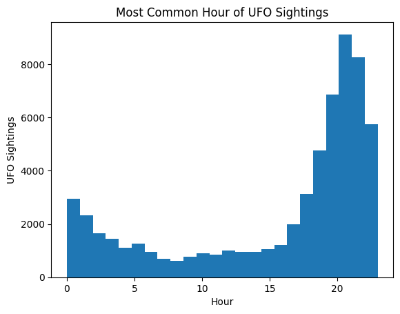
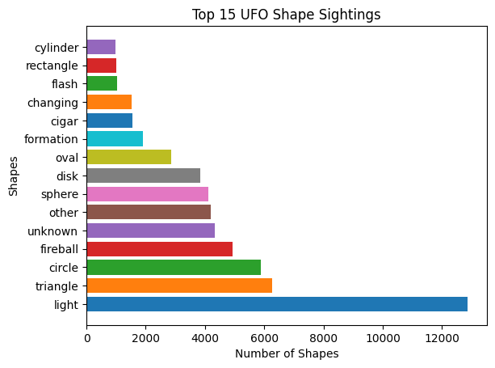
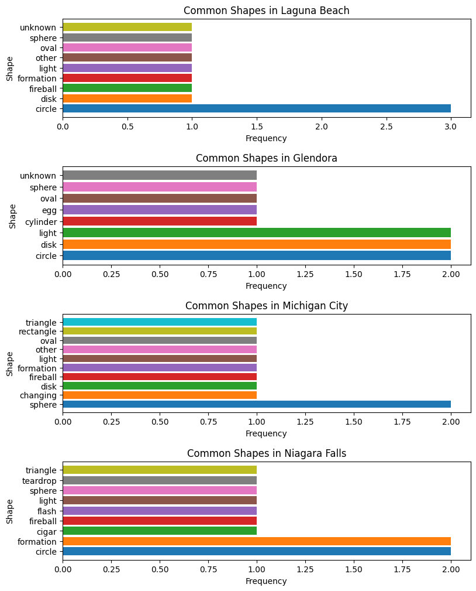

# import libraries
import pandas as pd
import matplotlib.pyplot as plt
import nltkDate: August 2, 2023
Name: Chanleakhana Thon
Introduction
Description: The dataset I decided to look at is called “UFO Sightings” and includes over 80,000 records of UFO sightings around the world. This dataset includes the UFO’s shape, the location of the sighting including the coordinates/country/state, the duration of the sighting, and the time of the sighting.
Link: https://corgis-edu.github.io/corgis/datasets/csv/ufo_sightings/ufo_sightings.csv
Motivation: My motivation for looking at this data is because I have an interest in conspiracy theories and extraterrestial beings and I would like to figure out whether there are patterns behind UFO sightings and what these patterns could mean.
Questions:
Is there a pattern among the most common times and location of UFO sightings?
Is there a common theme with the locations that have the most common UFO sightings?
Does the duration of the UFO sighting play an important role?
Do these patterns imply that these UFO sightings can be credible or debunked?
How have UFO sightings changed over time?
Methods
# request for data url
import requests
response=requests.get('https://corgis-edu.github.io/corgis/datasets/csv/ufo_sightings/ufo_sightings.csv')
response<Response [200]>Data Summary: The dataset includes the shape of the UFO, the location of the sighting (city and state), the duration of the encounter (in seconds), a short description of the sighting, coordinates of the sighting, and the time and date of the sighting (month, day, hour, minute, year), and the date that the sighting was documented. All of the data is numerical except for the description, shape, and location which is categorical.
# read the csv file into a dataframe and look at the head
url='https://corgis-edu.github.io/corgis/datasets/csv/ufo_sightings/ufo_sightings.csv'
df=pd.read_csv(url)
df.head(5)| Location.City | Location.State | Location.Country | Data.Shape | Data.Encounter duration | Data.Description excerpt | Location.Coordinates.Latitude | Location.Coordinates.Longitude | Dates.Sighted.Year | Dates.Sighted.Month | Date.Sighted.Day | Dates.Sighted.Hour | Dates.Sighted.Minute | Dates.Documented.Year | Dates.Documented.Month | Dates.Documented.Day | |
|---|---|---|---|---|---|---|---|---|---|---|---|---|---|---|---|---|
| 0 | anchor point | AK | US | disk | 300.0 | Large UFO over Mt. ILIAMNA Alaska. ((NUFORC N... | 59.776667 | -151.831389 | 2005 | 5 | 24 | 18 | 30 | 2005 | 5 | 28 |
| 1 | anchorage | AK | US | changing | 21600.0 | We could observe red lights dancing across the... | 61.218056 | -149.900278 | 2000 | 12 | 31 | 21 | 0 | 2001 | 2 | 18 |
| 2 | anchorage | AK | US | changing | 600.0 | INTENSE AMBER-ORANGE HONEYCOMB SHAPED DUAL HOR... | 61.218056 | -149.900278 | 2006 | 10 | 23 | 21 | 3 | 2006 | 12 | 7 |
| 3 | anchorage | AK | US | cigar | 15.0 | I explained away the first time I thought I se... | 61.218056 | -149.900278 | 2014 | 3 | 29 | 20 | 45 | 2014 | 4 | 4 |
| 4 | anchorage | AK | US | circle | 300.0 | Orange circles "climbing" then fadin... | 61.218056 | -149.900278 | 2011 | 10 | 21 | 21 | 0 | 2011 | 10 | 25 |
Results
Exploratory Data Visualisations
# plot a histogram of frequency of UFO sightings per hour
plt.hist(x=df['Dates.Sighted.Hour'], bins=24)
plt.title('Most Common Hour of UFO Sightings')
plt.xlabel("Hour")
plt.ylabel("UFO Sightings")Text(0, 0.5, 'UFO Sightings')
First Exploratory Visualization: The first exploratory visualization I decided to create was the most common hour of UFO sightings. It appears that most UFO sightings peak around 9PM. The least amount of UFO sightings appear around 8AM. The distribution seems to increase when it gets darker and decrease when there is more sunlight.
# use nltk FreqDist to get the top 15 cities with the most UFO frequency
city=df['Location.City']
top15city=nltk.FreqDist(city).most_common(15)
# plot the frequencies of the top 14 cities as a horizontal bar chart
for x,y in top15city:
plt.barh(x,y)
plt.title("Top 15 Cities with UFO Sightings")
plt.xlabel("Number of Sightings")
plt.ylabel("Cities")Text(0, 0.5, 'Cities')Second Exploratory Visualisation: The second exploratory visualization is a horizontal bar graph showing the top 15 cities based on amount of UFO sightings. The top 5 are big cities on the west coast of the United States which is interesting because in the previous map the dense parts of UFO sightings were mostly on the east half of the United States but these individual cities on the west coast hold the greatest number of UFO sightings.
# use NLTK library to get the most frequent UFO shapes
shape=df['Data.Shape']
top15shapes=nltk.FreqDist(shape).most_common(15)
# plot the frequency of the UFO shapes in a horizontal bar chart
for x,y in top15shapes:
plt.barh(x,y)
plt.title("Top 15 UFO Shape Sightings")
plt.xlabel("Number of Shapes")
plt.ylabel("Shapes")Text(0, 0.5, 'Shapes')
Third Exploratory Visualisation: The third exploratory visualisation is also a horizontal bar graph showing the top 15 shapes of UFO’s in UFO sightings. Sightings of the ‘light’ shape is far greater than any of the other shapes having over 12,000 sightings while the other shapes have less than 6000 sightings.
Data Visualisations
# use NLTK to see the frequency of the years to figure out the sightings per year
year=df['Dates.Sighted.Year']
sightingsperyear=nltk.FreqDist(year)
# for loop to plot a scatter plot of the year and it's frequency (number of UFO sightings)
for i in sightingsperyear:
plt.scatter(i, sightingsperyear[i])
plt.title("UFO Sightings per Year")
plt.xlabel("Year")
plt.ylabel("Number of UFO Sightings")Text(0, 0.5, 'Number of UFO Sightings')First Visualization: The first visualization is a scatter plot showing the amount of UFO sightings per year. Looking at the plot, it seems that the amount of UFO sightings is slowly increasing every year up until 2000 in which the amount of UFO sightings shoot up to 2000 sightings and continually up to 6000 after the year 2000.
# create a dataframe with only seattle as in the Location.City column
seattle = df.loc[df['Location.City'] == "seattle"]
# put the shapes that are in seattle into the seattleshape variable
seattleshape=seattle['Data.Shape']
# use NLTK library to find the most common shapes in seattle based on their frequency
seattlecommonshapes=nltk.FreqDist(seattleshape).most_common(9)
# repeat the above steps with 3 other cities in the top 15 cities with UFO sightings
lasvegas = df.loc[df['Location.City'] == "las vegas"]
lasvegasshape=lasvegas['Data.Shape']
lasvegascommonshapes=nltk.FreqDist(lasvegasshape).most_common(9)
la = df.loc[df['Location.City'] == "los angeles"]
lashape=la['Data.Shape']
lacommonshapes=nltk.FreqDist(lashape).most_common(9)
phoenix = df.loc[df['Location.City'] == "phoenix"]
phoenixshape=phoenix['Data.Shape']
phoenixcommonshapes=nltk.FreqDist(phoenixshape).most_common(9)# create a figure with 4 subplots and desired spacing and size
fig, (ax1, ax2, ax3, ax4) = plt.subplots(nrows=4, ncols=1,gridspec_kw={'hspace': 0.5},figsize=(9, 12))
# for loop to plot the shape and the shape's freqency from the lasvegascommonshapes paired array
for shape, count in lasvegascommonshapes:
ax1.barh(shape, count)
ax1.set_title('Common Shapes in Las Vegas')
ax1.set_xlabel('Frequency')
ax1.set_ylabel('Shape')
# do the same steps as above for the rest of the cities
for shape, count in seattlecommonshapes:
ax2.barh(shape, count)
ax2.set_title('Common Shapes in Seattle')
ax2.set_xlabel('Frequency')
ax2.set_ylabel('Shape')
for shape, count in lacommonshapes:
ax3.barh(shape, count)
ax3.set_title('Common Shapes in Los Angeles')
ax3.set_xlabel('Frequency')
ax3.set_ylabel('Shape')
for shape, count in phoenixcommonshapes:
ax4.barh(shape, count)
ax4.set_title('Common Shapes in Phoenix')
ax4.set_xlabel('Frequency')
ax4.set_ylabel('Shape')Text(0, 0.5, 'Shape')Second Visualization: The second visualization looks closer at the top cities with the most common UFO sightings to see what their most common UFO shapes were. In this visalization, we look at Las Vegas, Los Angeles, Phoenix, and Seattle. We can see that forth all of the plots, the most common UFO shape that was sighted was the “light” shape which exceeds the other shapes by far.
# do the same steps as done for the cities with the most common UFO sightings but instead with 4 cities with
# the least amount of UFO sightings
lagunacity = df.loc[df['Location.City'] == "laguna beach"]
lagunashape=lagunacity['Data.Shape']
lagunacommonshapes=nltk.FreqDist(lagunashape).most_common(15)
glendora = df.loc[df['Location.City'] == "glendora"]
glendorashape=glendora['Data.Shape']
glendoracommonshapes=nltk.FreqDist(glendorashape).most_common(15)
michigan = df.loc[df['Location.City'] == "michigan city"]
michiganshape=michigan['Data.Shape']
michigancommonshapes=nltk.FreqDist(michiganshape).most_common(15)
niagara = df.loc[df['Location.City'] == "niagara falls"]
niagarashape=niagara['Data.Shape']
niagaracommonshapes=nltk.FreqDist(niagarashape).most_common(15)
# create a figure with 4 subplots and desired spacing and size
fig, (ax1, ax2, ax3, ax4) = plt.subplots(nrows=4, ncols=1,gridspec_kw={'hspace': 0.5},figsize=(9, 12))
# for loop to plot the shape and the shape's freqency from the lasvegascommonshapes paired array
for shape, count in lagunacommonshapes:
ax1.barh(shape, count)
ax1.set_title('Common Shapes in Laguna Beach')
ax1.set_xlabel('Frequency')
ax1.set_ylabel('Shape')
# do the same steps as above for the rest of the cities
for shape, count in glendoracommonshapes:
ax2.barh(shape, count)
ax2.set_title('Common Shapes in Glendora')
ax2.set_xlabel('Frequency')
ax2.set_ylabel('Shape')
for shape, count in michigancommonshapes:
ax3.barh(shape, count)
ax3.set_title('Common Shapes in Michigan City')
ax3.set_xlabel('Frequency')
ax3.set_ylabel('Shape')
for shape, count in niagaracommonshapes:
ax4.barh(shape, count)
ax4.set_title('Common Shapes in Niagara Falls')
ax4.set_xlabel('Frequency')
ax4.set_ylabel('Shape')
Text(0, 0.5, 'Shape')
Third Visualization: The third visualization looks at specific cities with low amounts of UFO sightings to see what their most common UFO sightings shapes were. In this figure, we look at Laguna Beach and Glendora. For Laguna Beach, we can see that the most common shape is a “circle” which is 3 times more than Laguna Beach’s other most common shape sightings. For Glendora, we can see that the most common shape is tied between the “light”, “disk”, and “circle” which is only about 2 times more than Glendora’s most common shapes. Michigan has the “sphere” shape as the most common UFO sighting which is 2 times more than other shape sightings. Finally, Niagara Falls is tied with “formation” and “circle” being the most common shapes which is twice as much as the other most common shape sightings.
# filter the dates.sighted.year column from 1997 to 2014
filtered_df = df.loc[(df['Dates.Sighted.Year'] >= 1997) & (df['Dates.Sighted.Year'] <= 2014)]
# create a dataframe that only has the Dates.Sighted.Year and Data.Shape columns
# then get the amount of each using .size()
# then use unstack to reshape the dataframe so that the shapes sizes are its own columns
grouped_data = filtered_df.groupby(['Dates.Sighted.Year', 'Data.Shape']).size().unstack()
# plot the new dataframe as a stacked barplot
grouped_data.plot.bar(stacked=True, colormap='tab20')
# create a legend for the shape colors on the right of the figure
plt.legend(title='Shape',bbox_to_anchor=(1.5,1))
plt.title('Shape Frequencies over the Years')
plt.xlabel("Year Sighted")Text(0.5, 0, 'Year Sighted')Fourth Visualization: The fourth visualization is a stacked bar chart which shows the amount of sightings of each UFO shape for every year from 1997 to 2014. It seems that, in general, most of the shapes increase over the years up to 2013. The “light” shape has always seemed to be the largest and maybe at a tie with “unknown” up until 2006 until the “light” shape begins to increase faster than the other shapes around 2012.
Discussion
The big ideas that my analysis has shown is that UFO sightings have increased over the years, have mostly been sightings of light shapes, and are most common in large urban cities. It also seems that the cities with the greatest number of UFO sightings also have ‘light’ as their most common shapes whereas cities with the least number of UFO sightings have various other shapes besides ‘light’ as their most common shapes.
I noticed that the top cities with the greatest number of UFO sightings such as Las Vegas, Seattle, Los Angeles, and Phoenix are all large urban cities with a lot of infrastructure such as skyscrapers and a lively city at night compared to cities that mostly consist of the suburbs. Light reflections from buildings and nightlife outdoor events such as concerts and shows that might have fireworks or lighting effects could therefore be mistaken as a UFO. This is likely since these cities all have “light” as their most common UFO sighting shapes compared to the cities with less UFO sightings such as Laguna Beach, Glendora, Michigan City, and Niagara Falls which are more rural and suburban areas.
With the most common time of UFO sightings being around 9PM, the most common UFO shape being a “light”, the amount of UFO sightings increasing over time, and most UFO sightings being in large urban cities, these could all point to the possibility that a lot of these UFO sightings could just be various artificial lights from the nightlife of urban cities causing there to be more unusual looking objects in the sky. The increasing amount of UFO sightings over time could be due to the increase and expansion of these large urban city infrastructures. The stacked bar chart agrees with this since we can see that compared to other shapes, sightings of the “light” and “fireball” shape has shown the most growth over the years.
I think that these findings show that a lot of UFO sightings can be debunked since there is a pattern of UFO sightings being “light” shapes seen during the night in large urban cities. There are too many other possibilites of what these sightings could be given these circumstances to be able to say with certainty that these sightings are UFOs. However, my data exploration and data visualizations have raised more questions that I was not able to figure out such as why a lot of UFO sigthings are on the east side of the United States but much less towards the middle and why most UFO sighting endurations are over 2 hours but there have not been any controvery or footage surrounding them if sighting was so long.